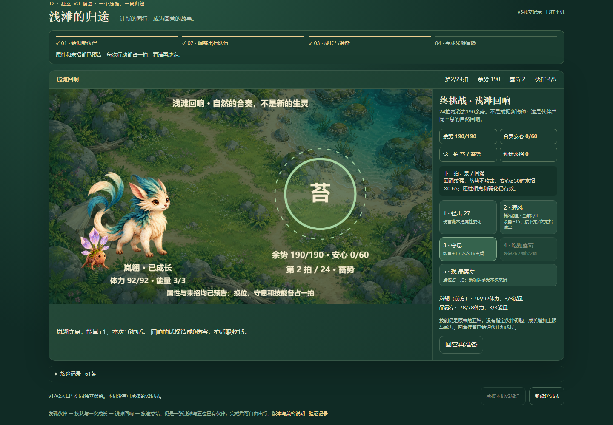
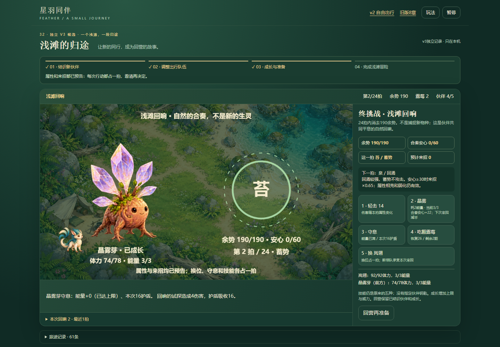
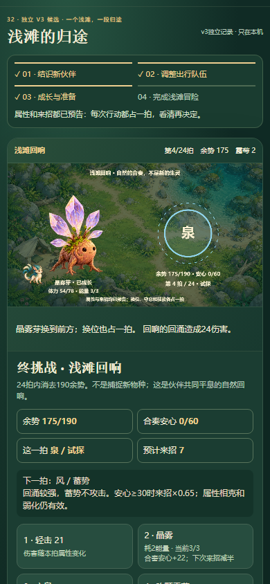
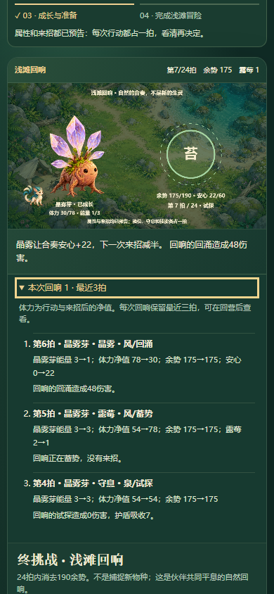
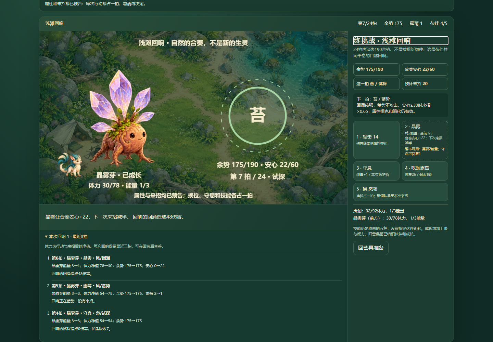
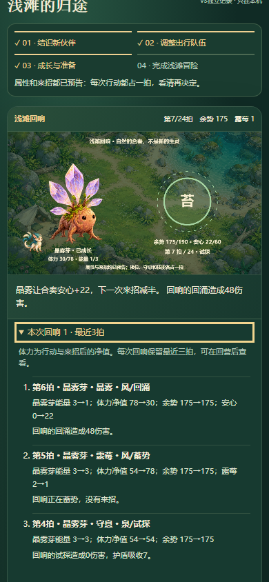
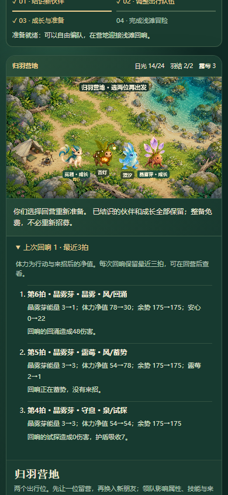
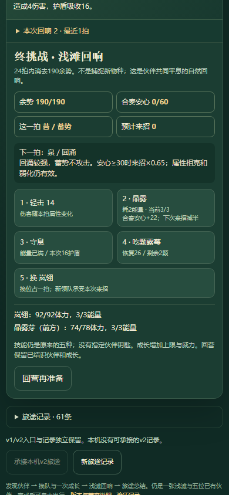

即时反馈已有伤害与护盾，但上一拍会被覆盖；本轮普通UI确认后，只加默认收起的三拍状态对照，并纠正满能量守息的显示。原规则、奖励、任务和存档保持。
试玩 · 判断与范围 · 修改前普通UI · 本地真实profile续验 · 守息最终显示 · 10组逻辑测试 · 刷新与断连记录 · 下一线索及证据等级 · 覆盖索引
本地基线44个正常动作，修复后同profile续做6个动作；无结束/存档注入。线上发布后另验。终局/安心封顶是离线模型，非普通UI；窄屏模拟非真机或整体体验验收。







